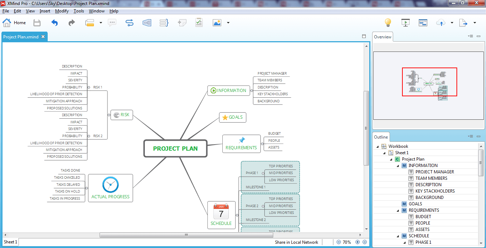

Overview
Overview viewer is very good at navigating the map, esp. the big and complicated mind maps.Sometimes, it's also called Pan and Zoom viewer. Because it has two features.
- Pan, press the left mouse key, and move the mouse in the viewer, we can see the see the part in red box in the map editor.
- Zoom, if you scroll the mouse wheel when focuing in the overview viewer, you will find that the map will be zoomed in/out in the editor.
Overview Viewer and the Map Editor

You may also be interesting at...